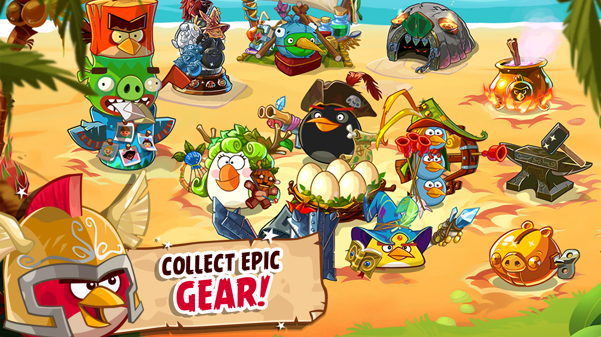
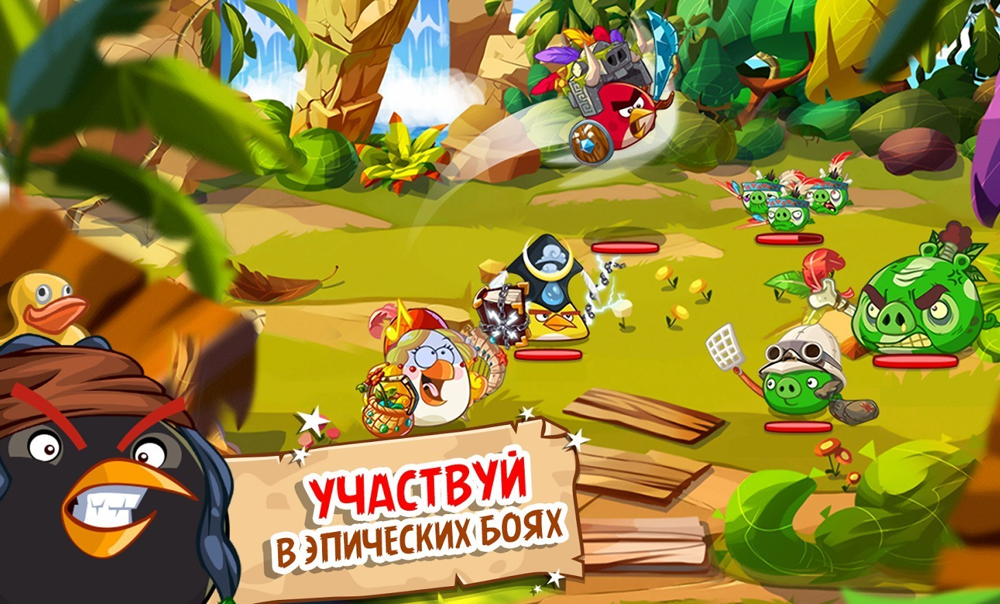
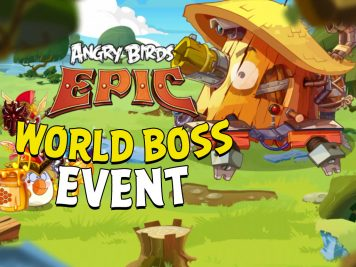

Angry Birds Epic — бесплатная ролевая видеоигра , девятая часть серии Angry Birds , разработанная Chimera Entertainment и изданная Rovio Entertainment . Игра была анонсирована 12 марта 2014 года и включает в себя пошаговые бои и систему крафта.

Сюжет
Внимание! Данный раздел является полным пересказом сюжета игры. Если вы ещё не прошли игру до конца, рекомендуем не читать его.
Король свиней, Свиномаг и Принц Сало приказывают свиньям украсть яйца. Свины нападают на птиц, крадут яйца и разбрасывают
их по всему острову. Также они похищают у птиц ценности и Чака, остальные птицы бегут. Остаётся лишь Ред, который не хочет сдаваться. Он побеждает свиней в тюрьме, где заперли Чака, и освобождает его. Вместе Ред и Чак отбирают у свиней украденные наковальню
и котёл, бегут в Кобальтовый замок свиней и там добивают Принца Сало и спасают одно яйцо. Но Магу удаётся забрать оставшиеся четыре яйца и поместить одно из них в другом, пустынном замке, который располагается на Пустынном острове. Птицы идут вперёд,
но тут замечают, что свинья-жулик по имени Монти топчет сад Матильды. Птицы прогоняют его, и Матильда восстанавливает свои овощи. Испуганный Принц Сало бежит к Свину-пилоту, чтобы скрыться от погони, но воздушный шар, при помощи которого он пытается скрыться,
из-за тяжести Золотой свиньи-копилки не взлетает. Птицы атакуют аэродром и избивают пилота, но верёвка, с помощью которой свинья-копилка была привязана к шару, обрывается, и Сало удаётся, хоть и не мягкой посадкой, бежать на Пустынный остров. Птицы думают,
как перебраться на тот берег, и тут к ним приплывает Бомб, чтобы помочь. Но на его корабль нападают свиньи-пираты. Птицы бегут на помощь и сбивают свиней с корабля. Им всё-таки удаётся взять штурвал, но птицы его отнимают и через Известковую лагуну, Риф
кораблекрушений и Южное море приплывают на остров. Увидев это, Принц Сало закрывает подступы к замку на ворота, ключ от которых имеется у него. Но неожиданно появляются Синие птицы, которые крадут у него ключ и хотят отдать их птицам. Рассерженный Принц
Сало посылает пиратские корабли атаковать Синих. Птицы бегут на помощь и спасают Синих. Принц Сало лишается своего корабля и с позором уплывает на остров. Птицы атакуют башню и спасают второе яйцо. Принц Сало куда-то убегает, а Маг улетает с тремя украденными
яйцами и помещает одно из них в ещё одном замке, который находится на маленьком островке среди Коралловых рифов. Птицы идут в погоню, перемещаясь по Пиратскому берегу, Рогаточным лесам и Великим утёсам, но Маг несколько раз пытается перекрыть им путь,
насылая на них различных сильных свиней. Когда птицы почти добираются до башни, Свиномаг закрывает вход в башню синими воротами. Птицы пытаются пройти с другой стороны, но Свиномаг переставляет ворота туда. Неожиданно Ред понимает, что после того как
Маг переместил ворота на другой проход, первый снова оказался открытым. Птицы устремляются туда и спасают третье яйцо. Маг улетает, но при этом роняет синий ключ от ворот, который подбирают птицы. Маг помещает четвертое яйцо в горный свинский замок. Птицы
бегут к ледяной горе. В бамбуковом лесу на них нападают свиньи-ниндзя, которые похищают Бомба, Чака и Реда. Матильда и Синие спасают первых двух, но неожиданно прилетает принц Сало и берёт в плен Реда. Птицы не знают, что делать. Им помогает Свинья-профессор
— он строит для них дирижабль, и птицы спасают Реда, а заодно добираются до ледяной горы. На ледяной горе птицы убивают воздушных пиратов и забирают четвёртое яйцо. Принц Сало и Свиномаг сбегают в Свиноград. Король свиней видит, что у него есть только
одно яйцо, и разочаровывается, так как он хотел все пять. Птицы подходят к Свинограду, но, увидев, что вход в город закрыт воротами, переправляются на дирижабль. Капитан стражи стреляет по дирижаблю из катапульты. Птицы решают попасть в город на корабле,
но море кишит минами. Они вынуждены вернуться на сушу. Свинья-профессор говорит птицам, что у Босса-подводника есть подлодка. В ходе битвы за лодку Босс-подводник сбегает, и птицы берут контроль над подводной лодкой. Приплыв к порту Свинограда, птицы
встречают Принца Сало и Свиномага. Начинается битва, и птицы побеждают. Поверженные свиньи прячутся в замок Короля свиней. Птицы попадают в замок, избивают врагов и забирают последнее яйцо. Неожиданно Свиномаг поднимается в воздух, крадет корону Короля
и последнее птичье яйцо и скрывается в портале. Король свиней плачет, а разъяренные птицы и Принц Сало смотрят ему вдогонку. Свиномаг улетает на Свиноголовую гору и строит свой собственный замок. Также он ставит на его охрану пять стражей, которые заряжают
магическое силовое поле. Птицы с помощью дирижабля прилетают на утес и разбираются со стражами Свиномага. Он убегает в свой замок под охраной двух зомби. Птицы проникают в замок и атакуют Свиномага. Побеждённый Свиномаг внезапно встает и превращается
в огромного демона. Неожиданно Принц Сало присоединяется к птицам и помогает им побить Демона. Вместе птицы и Сало убивают Мага. После победы Ред дает Сало корону, чтобы тот вернул её отцу, а Сало в свою очередь возвращает птицам яйцо. Все ликуют и радуются.
Принц Сало возвращает отцу корону, он радуется и заключает с птицами мир. Все персонажи становятся на утес и любуются закатом солнца. Тем временем за приключениями птиц пристально из подзорной трубы наблюдал Теренс. Он видел весь поход птиц: от похищения
Чака и яиц до возвращения яиц и победы над Свиномагом. Улыбнувшись, Большой брат понял, что птицы достойны участвовать в птичьих боях на арене. Когда они подплыли к арене на лодках, Теренс их поприветствовал фейерверком и фанфарами. Теперь он работает
на арене в качестве судьи боёв.

Геймплей
Перед каждым уровнем игроки могут выбрать до трех птиц (на уровнях подземелий можно выбрать только 2 птицы, а также птицу от друга на Facebook ) в свою группу, в зависимости от уровня. В битве враги, в основном свиньи, появляются на ландшафте. Битвы могут
быть обычными, могут включать несколько волн врагов или битвы с боссами. Чтобы атаковать, игроки проводят пальцем от птицы к врагу. Чтобы использовать вторичный навык (в основном типы защиты), игрок нажимает на птицу, чтобы использовать его на себе,
или проводит пальцем по другой птице, чтобы передать его другой птице. Всякий раз, когда птицы атакуют или получают урон, в нижней части экрана заполняется индикатор «Rage Chili». Когда он заполнен, игроки могут применить его к птице, чтобы использовать
свою способность «ярость». При проигрыше в битве может быть выдан утешительный приз, и игрок либо вернется в главное меню, либо повторит попытку, либо продолжит игру. После победы в битве игроки могут заработать до трех звезд в зависимости от их результатов
в этой битве. Больше звезд указывает на большее количество ресурсов, которые игроки получают в качестве награды за победу в битве. Золотые счастливые монеты, которые встречаются редко, используются для покупки определенных классов, вращения машины
Golden Pig для предметов и покупки экстренных расходных материалов в бою. Их можно заработать, побеждая Золотую свинью, встречающуюся на разных уровнях, повышая уровень или совершая покупки в приложении. Данные игрового процесса можно резервировать
с помощью учетной записи Rovio , которая теперь недоступна для регистрации. По состоянию на май 2018 года только существующие учетные записи могут резервировать свои игровые данные.

Мультиплеер и события
В декабре 2014 года Angry Birds Epic была обновлена и включила многопользовательский режим. На Player Arena были еженедельные лиги, в которых лучшим игрокам выдавались эпические предметы. Существовали различные уровни, а самым высоким был уровень Diamond.
Игра периодически выпускала ограниченные по времени события, в которых игрок мог собирать медали событий или ресурсы, которые можно было обменять на редкие классы, валюту и предметы. Было только два события, которые были коллаборациями с другими мобильными
играми. Первое, событие Puzzle & Dragons в октябре 2014 года, включало персонажей из игры в качестве врагов, в то время как некоторые птицы были ограниченным по времени союзниками в мобильной игре с тем же названием. Второе, событие Sonic Dash в сентябре
2015 года, показывало Соника как играбельную «птицу» и врагов из серии Sonic , с доктором Эггманом в качестве врага-босса и новым классом для Чака. Три птицы также были ограниченным по времени игровыми персонажами в мобильной игре с тем же названием.
Игра использовала цикл по всем событиям (за исключением совместных).